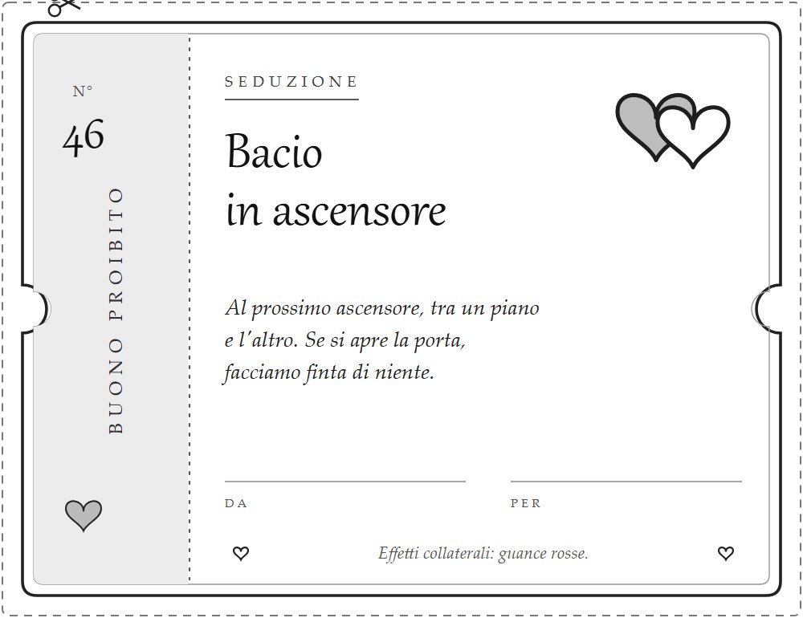
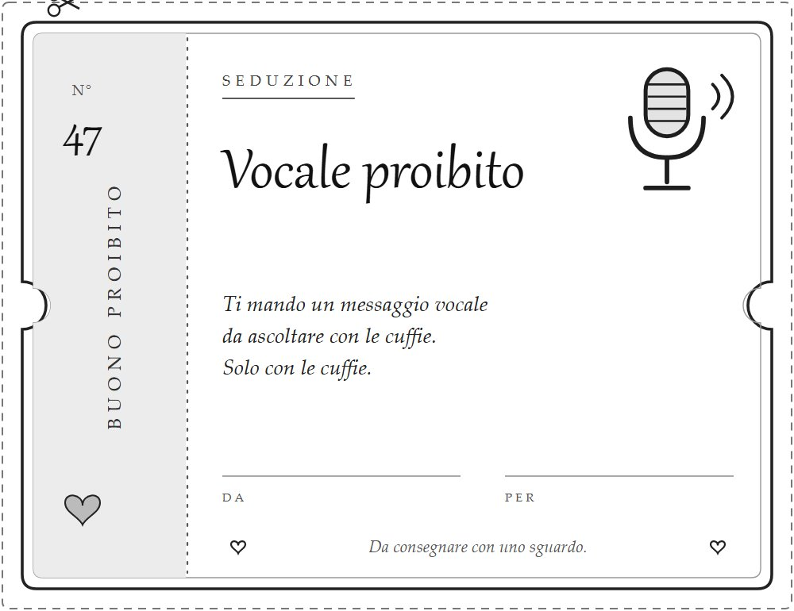
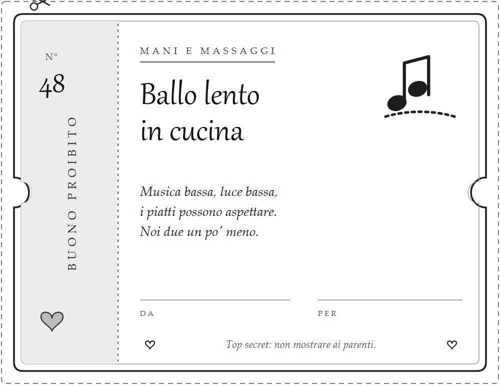
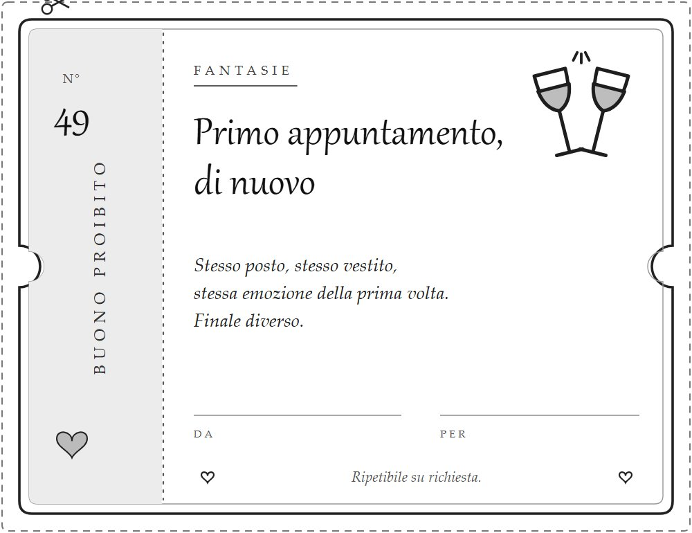
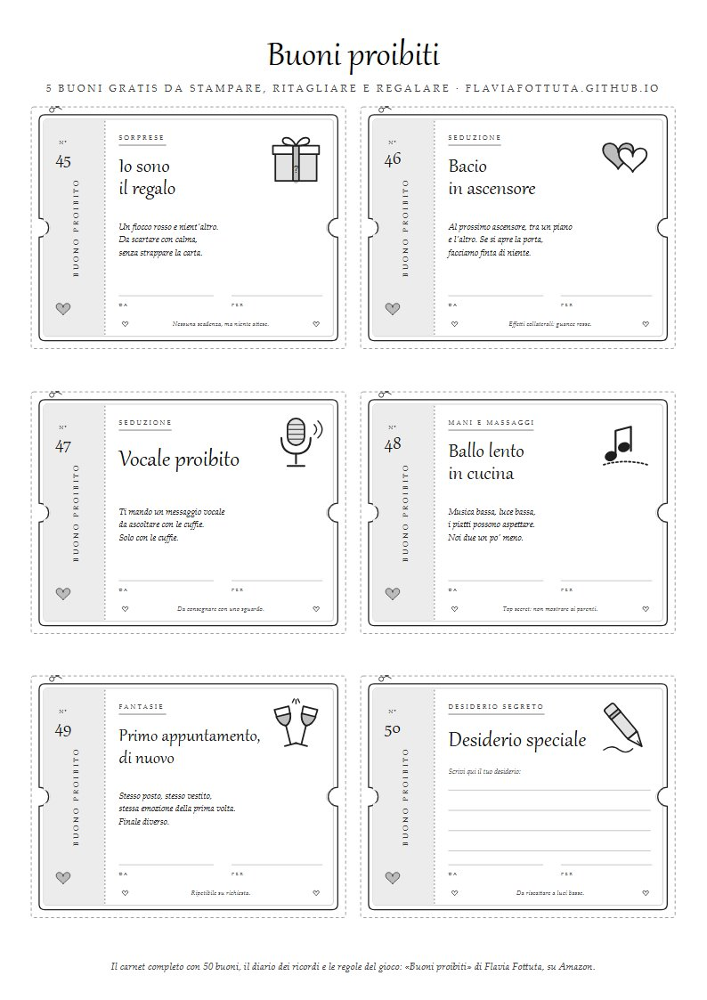
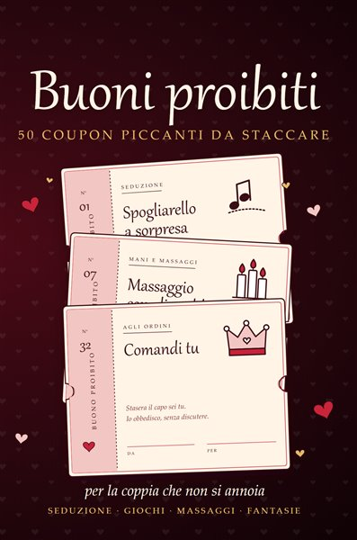
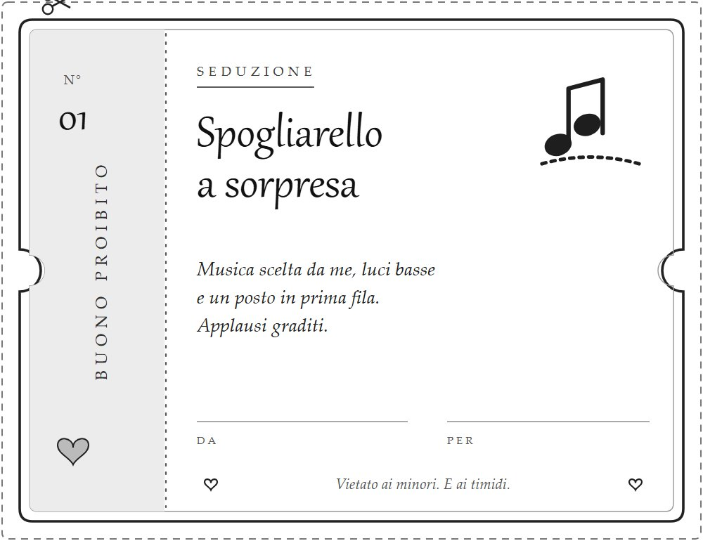
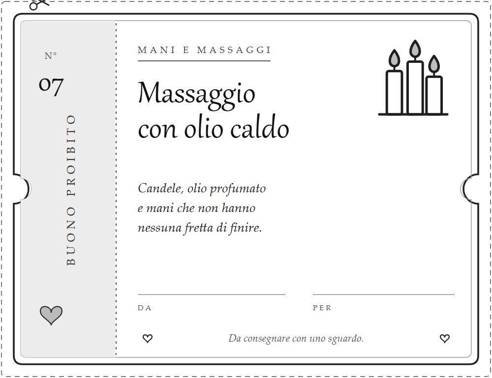
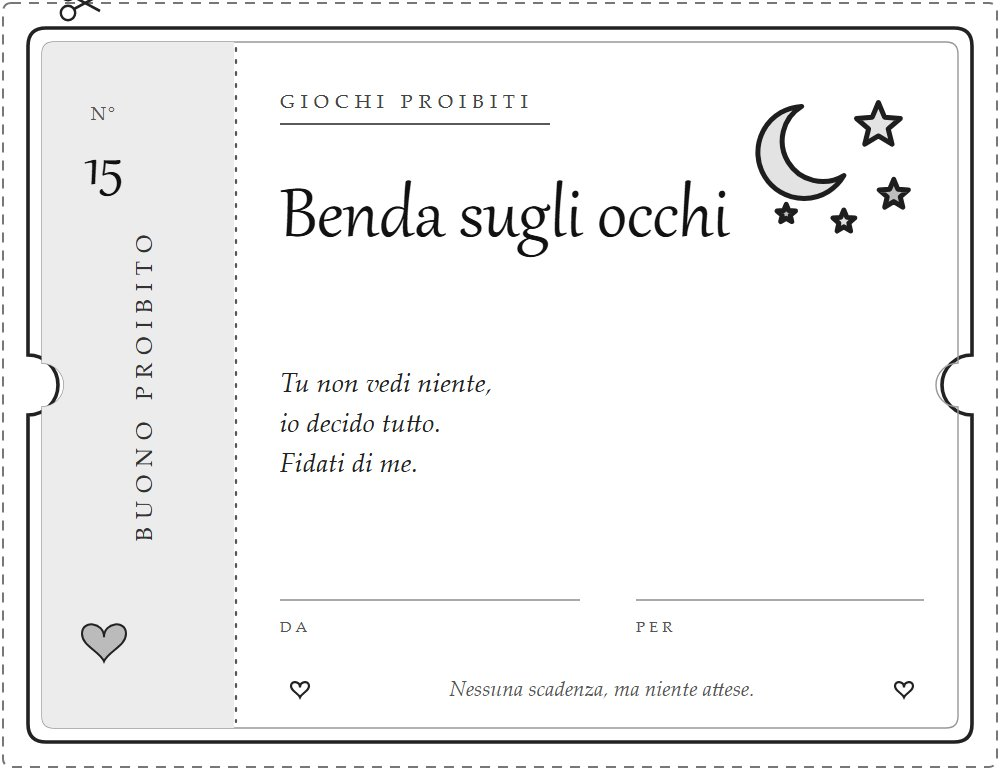
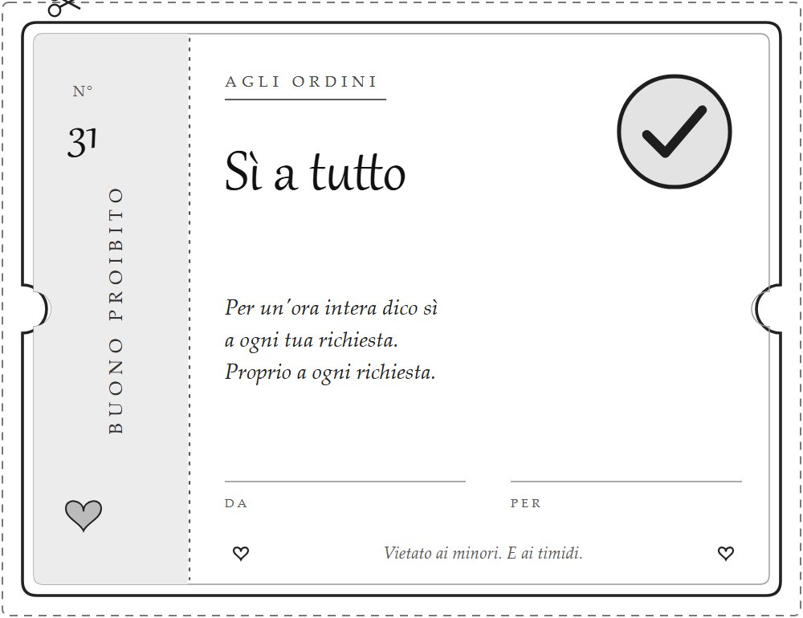

Home › Buoni proibiti
Buoni proibiti: 5 coupon piccanti gratis da stampare
Un regalo per la persona che ami, da consegnare con uno sguardo e riscattare il prima possibile. Maliziosi al punto giusto, mai volgari.
Abbiamo preparato cinque buoni proibiti che nel libro non ci sono: si stampano gratis su un foglio A4, si ritagliano lungo la linea tratteggiata e si regalano. Sul foglio c'è anche un sesto buono bianco, il «desiderio speciale», da scrivere di vostro pugno. Vanno bene per Natale, per San Valentino, per un anniversario o per un gioco all'addio al nubilato. Oppure per un martedì qualunque, che ne ha più bisogno di tutti.
Scarica il PDF da stampareIl buono del giornoIl carnet completo
I cinque buoni gratis






Come si usano
- Stampa il PDF su carta A4, meglio se un po' spessa (160 g o più): scala al 100%, orientamento verticale.
- Ritaglia i buoni lungo il tratteggio. Le forbicine disegnate ti dicono da dove partire.
- Scrivi «da» e «per», poi il desiderio speciale sul buono bianco.
- Consegna un buono alla volta: in tasca, sotto il cuscino, nel calendario dell'Avvento, in mezzo a un libro.
- Riscatta il prima possibile. La tentazione non ama aspettare.

Il libro di Flavia Fottuta
Il carnet completo: 50 buoni da staccare
- 44 buoni in 7 categorie: Seduzione, Mani e massaggi, Giochi proibiti, Sorprese, Fantasie, Agli ordini e Jolly piccanti.
- 6 buoni bianchi per i desideri segreti.
- Sul retro di ogni buono lo spazio per la data, il ricordo e il voto: il diario segreto della coppia.
- Le regole del gioco in otto articoli, la pagina della dedica e la «top ten segreta» dei buoni da rifare.
- Formato 15,2 x 22,9 cm, 58 pagine, copertina lucida. Costa meno di una cena fuori.
Un assaggio dal carnet
Quattro dei 44 buoni del libro. Gli altri si scoprono un buono alla volta, oppure tutti insieme nel buono del giorno.




Domande frequenti
È un libro volgare?
No. È allusivo e malizioso, ma non contiene immagini esplicite né parolacce: le illustrazioni sono candele, calici, note e cuori. Resta comunque un libro per adulti: meglio non lasciarlo sul tavolo quando arrivano i parenti.
I buoni si possono staccare?
Sì: ogni buono occupa mezza pagina e ha il tratteggio per ritagliarlo. Sul retro c'è lo spazio per il ricordo, così si può anche tenere il carnet intero come diario.
Per quale occasione va bene?
Natale, San Valentino, anniversari, compleanni, la festa della sposa o dello sposo. È un regalo piccolo, sotto i dieci euro, che fa effetto soprattutto se accompagna qualcos'altro.
Esiste una versione più tenera?
Sì, per chi vuole regalare coccole e sorprese anche davanti alla nonna c'è «Buoni d'amore», 72 coupon per la coppia senza malizia.